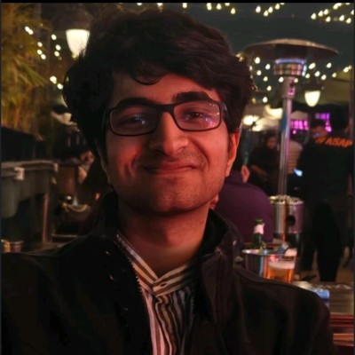
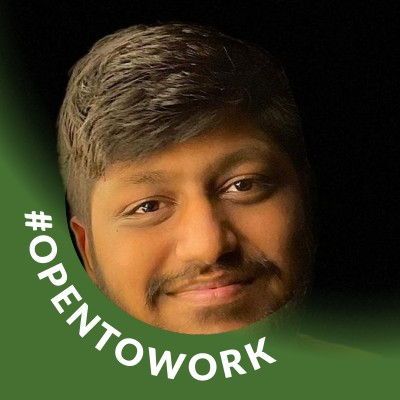
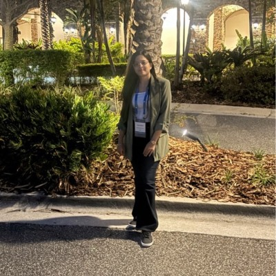
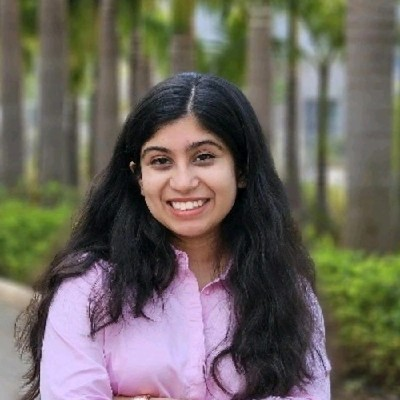
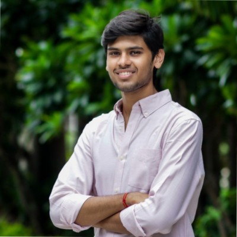
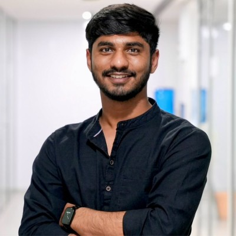
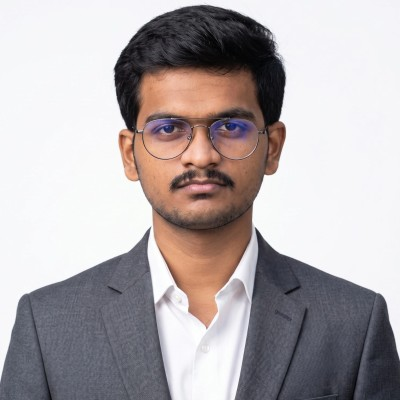
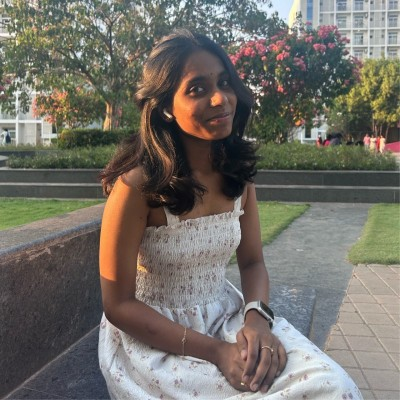
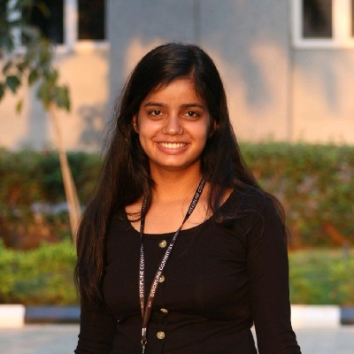

Mentorship
Students Mentored
Research mentoring has been a central part of my academic work. I guide students through problem formulation, literature review, experimental design, implementation, reproducibility and technical communication.
BITS Pilani
BITS Pilani, Pilani Campus
Research mentees from my doctoral and teaching period at BITS Pilani.


SRM University–AP
SRM University–AP
Undergraduate research mentees guided during my faculty appointment at SRM University–AP.






Mentoring approach
Problem FormulationLiterature ReviewExperimental DesignImplementationReproducibilityTechnical Writing